Préparation des données pour la Trigger-Level Analysis avec des coprocesseurs
Un tout petit réseau neuronal dans le déclenchement d’ATLAS peut-il transformer l’image calorimétrique entière d’une collision en une courte liste de jets ?
Sélectionnée pour le CERN openlab Summer Student Programme, j’ai étudié la reconstruction des jets à partir des données du calorimètre ATLAS, dans les limites de bande passante et de FPGA d’un futur système de Trigger-Level Analysis.
Pourquoi les jets, et pourquoi le déclenchement
Lorsque des protons entrent en collision au LHC, les quarks et les gluons ne peuvent pas être observés isolément. Ils donnent naissance à un faisceau étroit de particules appelé jet, qui suit approximativement la direction du quark ou du gluon initial. La direction et l’impulsion d’un jet renseignent les physiciens sur la collision : les jets sont donc utiles dès la première étape de sélection des événements.
Reconstruire un jet est plus difficile que reconstruire une particule seule. Il contient de nombreuses particules, chacune produisant sa propre gerbe dans le calorimètre. L’énergie se répartit donc entre de nombreuses cellules et plusieurs couches du détecteur.

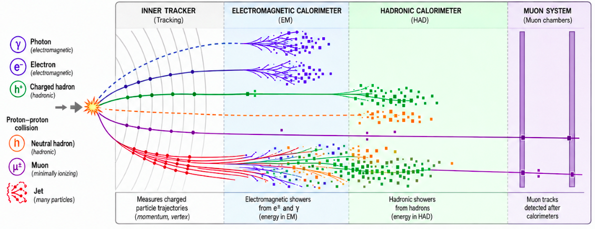
Chaque croisement des faisceaux produit plusieurs collisions de protons. Celle qui nous intéresse est appelée interaction dure, et les autres constituent l’empilement, ou pile-up. Une cellule du calorimètre ne sait pas de quelle collision provient son énergie : les jets recherchés se superposent donc à un fond diffus.
Les faisceaux se croisent environ 40 millions de fois par seconde, et le détecteur ne peut pas tout enregistrer. Le système de déclenchement choisit en temps réel les événements à conserver. Au LHC à haute luminosité, chaque croisement produira jusqu’à environ 200 collisions.

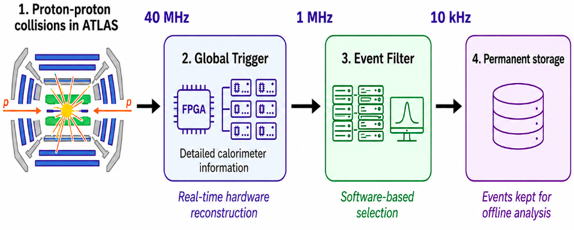
Dans la nouvelle conception, un déclenchement matériel de niveau 0 réduit l’entrée de 40 MHz à au plus 1 MHz. Un filtre d’événements logiciel la ramène ensuite à environ 10 kHz pour le stockage.
Le Global Trigger fait partie du niveau 0 et voit le calorimètre dans tous ses détails. Ses FPGA et AI Engines pourraient permettre une partie de la reconstruction avant que les données quittent la carte. C’est cette possibilité que le projet a explorée.
Faire entrer un événement dans la franchise bagages
L’objectif était de transformer, dans le système de déclenchement, l’image calorimétrique d’un événement en une courte liste de jets. Chaque jet est décrit par son impulsion transverse, sa position dans le détecteur et un score indiquant sa probabilité d’être réel.
Les événements sont des simulations de paires de bosons de Higgs, tous deux se désintégrant en quarks b, avec environ 200 collisions d’empilement par croisement. Les 24 régions d’échantillonnage du calorimètre ATLAS sont regroupées en profondeur en six canaux, chacun formant une grille de 50 par 64 : soit 19 200 valeurs par événement.
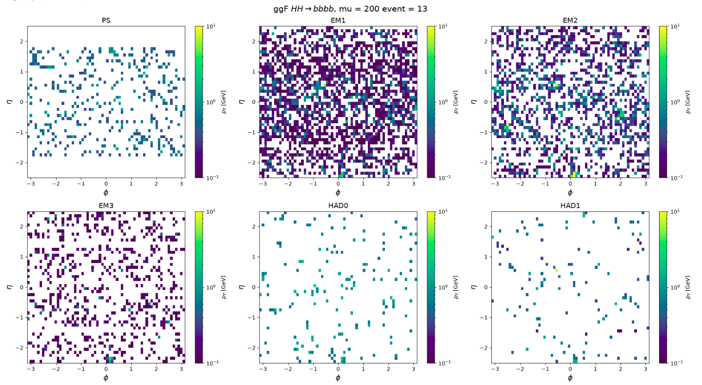
Le Global Trigger utilise 49 cartes de traitement, chacune recevant environ 816 000 événements par seconde. Avec environ 20 Gb/s par carte, on dispose de quelque 24 500 bits par événement, soit environ 766 valeurs en précision 32 bits. Envoyer l’image calorimétrique complète nécessiterait environ 502 Gb/s par carte, soit 25 fois le budget.
Ce que le calorimètre montre à lui seul
Avant d’entraîner un réseau, j’ai mesuré les possibilités d’une méthode très simple. Un jet laisse généralement un maximum local d’énergie. Les six canaux sont additionnés, moyennés par blocs de 2 sur 2, puis chaque cellule plus intense que ses huit voisines devient candidate. Rien n’est appris dans cette méthode.
Chaque maximum reçoit un score de visibilité comparant son énergie à la médiane et au plus grand maximum de l’événement. Augmenter le seuil de visibilité élimine des faux maxima, mais commence aussi à éliminer des jets réels.

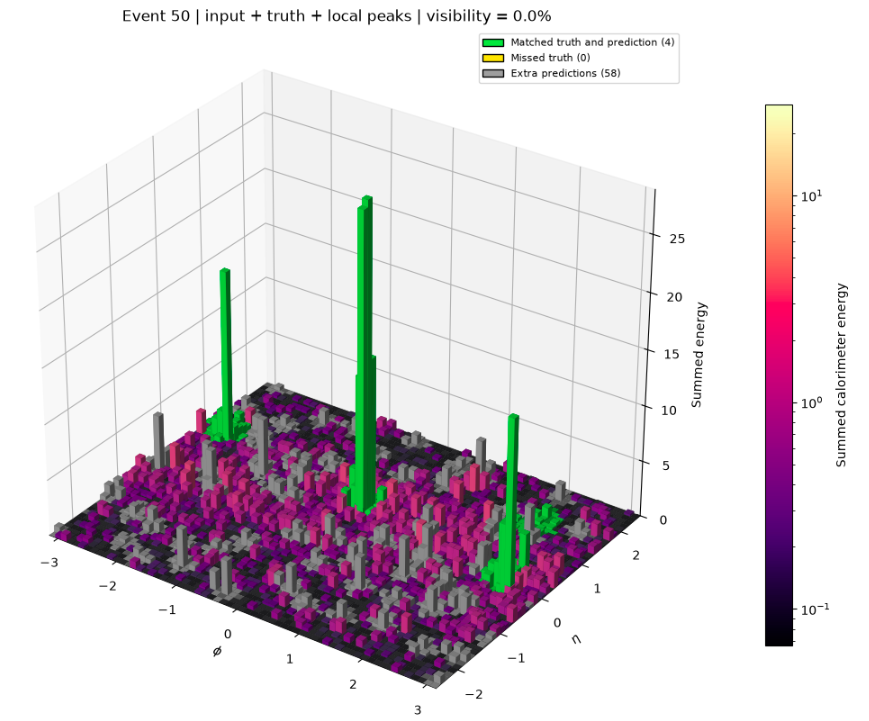
Fig. 04 · Événement 50 en 3D · vert : jets retrouvés · jaune : manqués · gris : maxima supplémentairesTous les jets réels sont retrouvés, mais l’événement contient beaucoup de faux maxima.
À 3 %, un jet réel est déjà perdu, tandis que plusieurs faux maxima restent plus intenses que lui. Certains jets ne sont tout simplement pas clairement visibles dans le calorimètre. Cela m’a donné une référence sur les performances raisonnablement attendues d’un réseau.

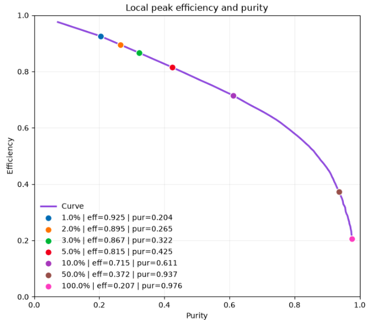
Un premier modèle à 708 paramètres
Le modèle produit toujours 20 emplacements candidats. Chacun possède une impulsion transverse, une position et un score entre 0 et 1 ; seuls ceux dépassant un seuil sont conservés. Une sortie de taille fixe peut ainsi décrire des événements contenant un nombre variable de jets : généralement quatre à six dans cet échantillon, et onze au maximum.

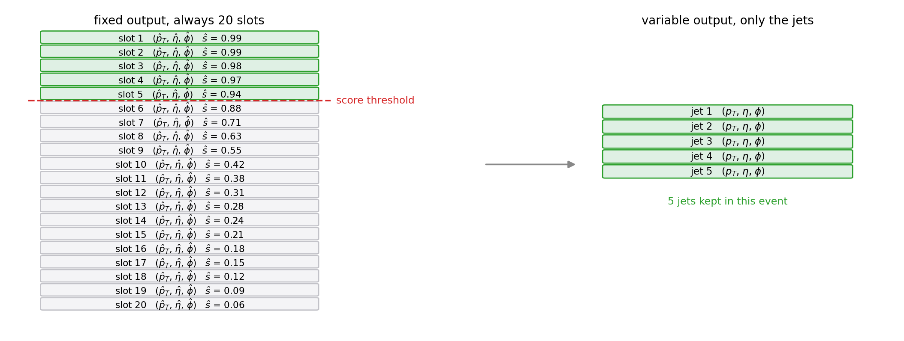
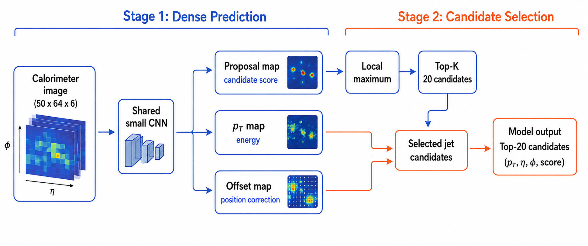
Deux petites convolutions lisent l’image calorimétrique et produisent trois cartes du détecteur : le score, l’énergie et une petite correction de position à l’intérieur de chaque cellule. Les 20 maxima locaux les plus élevés de la carte de score deviennent les candidats. Le modèle entier contient 708 paramètres, soit environ 2,8 ko.
Les positions sont très précises, avec des erreurs médianes de 0,029 en η et de 0,022 en φ, inférieures à une cellule de la grille. L’impulsion transverse est moins précise, avec une erreur médiane de 11,4 GeV.

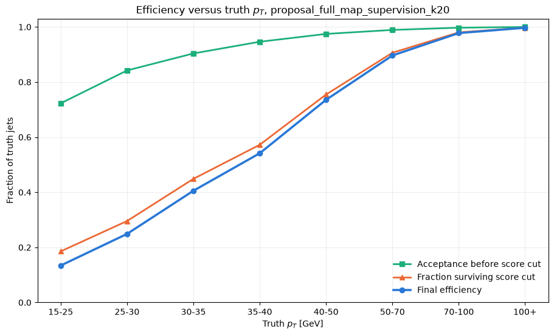
Où les jets sont perdus
Environ 95 % des jets réels avaient déjà un candidat à proximité. L’essentiel des pertes survenait ensuite, lorsque le score devait distinguer les jets faibles de l’empilement. Au-dessus de 70 GeV, l’efficacité dépassait 97 %, tandis que beaucoup de jets de basse énergie étaient rejetés au seuil.
Parmi les 8 209 jets réels ayant un candidat mais échouant au seuil, 1 971 figuraient pourtant parmi les meilleurs candidats de leur événement. Leur score était faible dans l’absolu, mais élevé par rapport au reste de l’événement. Le modèle de référence ne pouvait pas exploiter cela : il attribuait un score à chaque candidat isolément.
Permettre aux candidats de se comparer
Le modèle suivant conserve la même idée et ajoute une comparaison. Les 32 maxima les plus élevés deviennent des candidats décrits par 22 valeurs chacun. Un bloc d’auto-attention à quatre têtes permet à chacun d’observer les autres avant la correction de son score. L’attention ne modifie que le score : énergie et position proviennent toujours de l’étape convolutive.
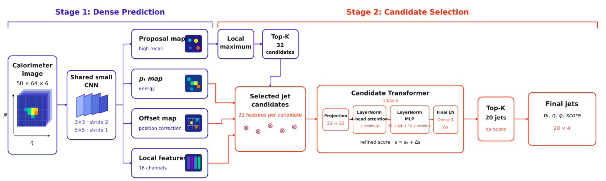
L’efficacité est passée de 77,3 % à 80,5 %, et l’AUC de 0,934 à 0,950, avec les gains les plus importants aux énergies basses et intermédiaires. Le nombre de jets réels perdus malgré un bon classement dans leur événement est passé de 1 971 à 1 577.
Ce modèle possède aussi une étape convolutive plus large : le gain ne peut donc pas être attribué à l’attention seule. Les versions allégées ci-dessous ont aidé à séparer ces deux effets.

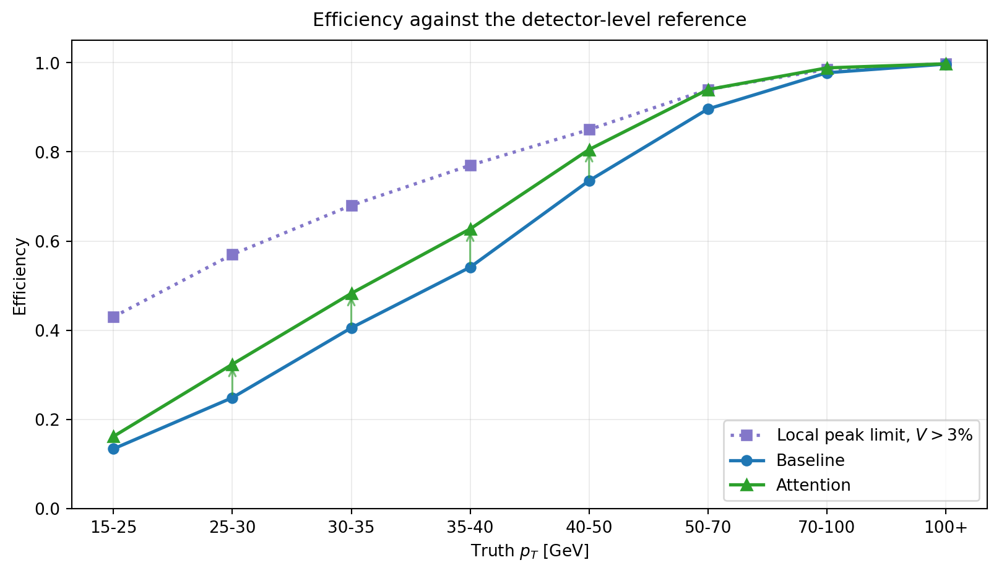
Jusqu’où peut-on le réduire ?
V1 revient aux petites convolutions à quatre canaux, mais conserve le bloc d’attention complet. Avec 9 639 paramètres, elle atteint 80,3 %. V2 réduit aussi le bloc d’attention et atteint 79,5 % avec 1 155 paramètres. Comparer les candidats compte davantage pour distinguer les jets qu’une étape convolutive large.

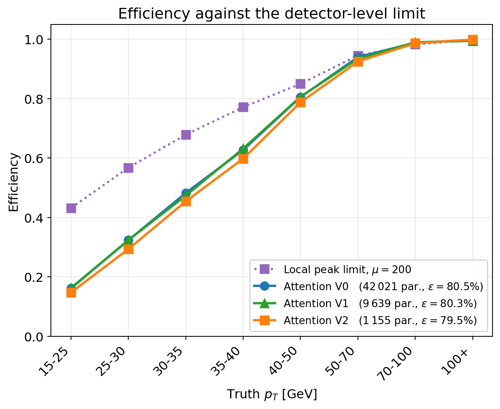
Un effet secondaire à connaître
Avec l’attention, les événements à trois à cinq jets conservent plus souvent leur jet réel le plus faible, mais ceux à sept jets perdent environ 17 points. Le modèle ramène chaque événement vers le nombre de jets habituel de l’échantillon, et la corrélation entre les nombres prédits et réels baisse de 0,543 à 0,512.

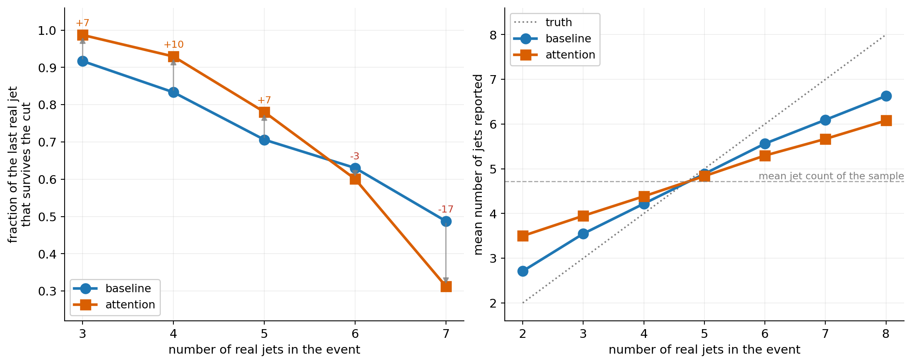
Le même modèle sans empilement
Pour savoir si la limite venait du modèle ou des données, j’ai réentraîné le même modèle d’attention sur des événements sans empilement. Il s’agit uniquement d’un contrôle, puisque le HL-LHC fonctionnera avec un empilement élevé.
Le gain est bien plus grand que ceux obtenus en changeant l’architecture. L’ambiguïté vient surtout de l’information calorimétrique sous fort empilement, et non de la taille du réseau. Même sans empilement, la tranche d’énergie la plus basse n’atteint que 62,2 % d’efficacité pour 95,4 % d’acceptation : une partie de la difficulté subsiste.
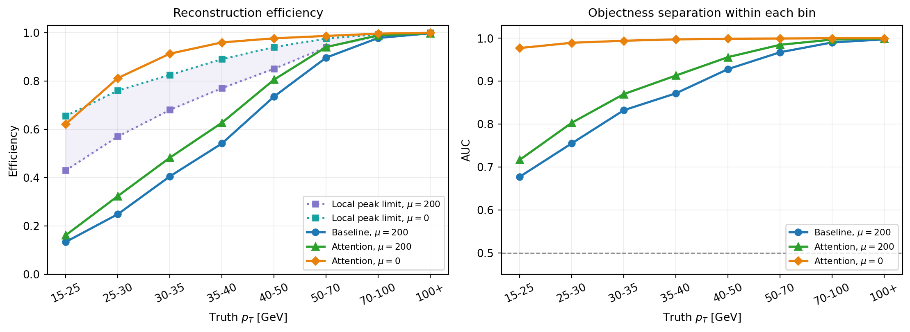
Bande passante et chemin vers un FPGA
Quelle représentation passe la porte
La liste finale de 20 jets à quatre valeurs chacun contient 80 valeurs par événement. Cela représente environ 2,09 Gb/s par carte, bien en dessous du budget de 20 Gb/s.
La bande passante ne répond qu’à la moitié de la question. Les modèles ont été développés dans TensorFlow, et certaines parties ne se convertissent pas directement avec le flux standard de hls4ml. L’utilisation des ressources et la latence ne pourront être mesurées qu’après leur réécriture et la synthèse sur le FPGA cible.
- Convolutions, couches denses, pooling et additions résiduellesPris en charge
- Sélection des candidats par maxima locaux et top-KRéécrire
- Traitement des coordonnées, périodicité de φ et log de pTRéécrire
- Auto-attention à plusieurs têtesReformuler
- Normalisation par coucheValider
- Padding et couches de tours propres au détecteurSur mesure
Prochaines destinations
Les prochaines étapes du rapportUne petite sortie résout le problème de débit, mais ne prouve pas qu’un modèle est prêt pour un FPGA. Le contrôle de l’empilement montre aussi pourquoi améliorer uniquement l’architecture ne suffit pas.
Documents de vol
Cette page suit le rapport intermédiaireLes explications et figures proviennent de mon rapport intermédiaire détaillé. Le rapport final est disponible sur Zenodo, et les diapositives de la présentation finale sur CERN Indico.